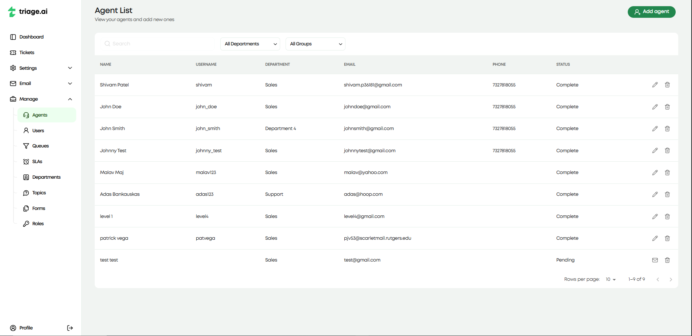
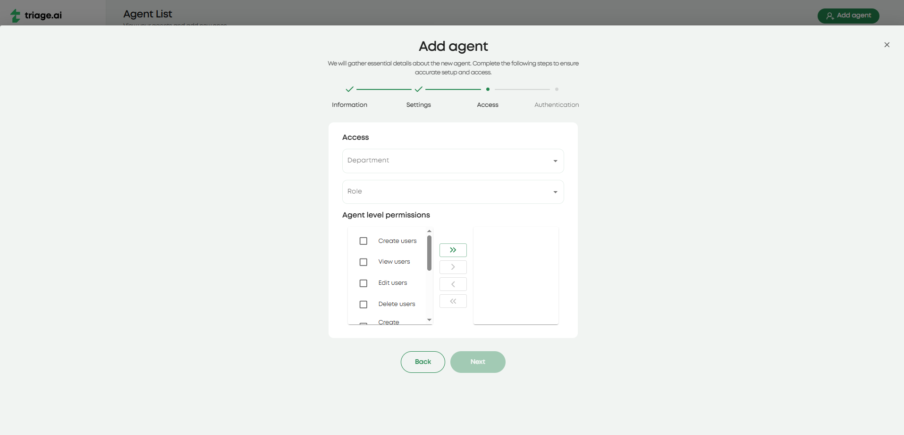
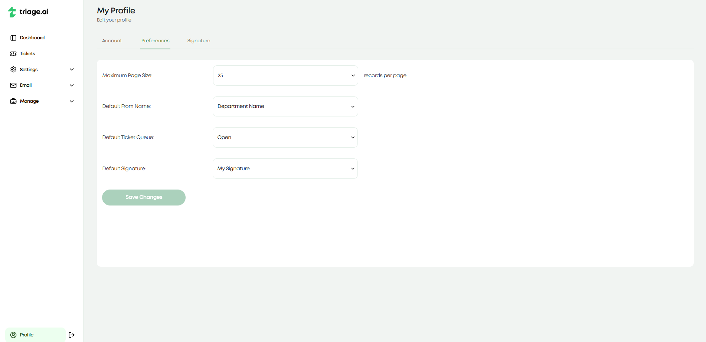

Agent Guide
Within triage.ai, agents are the primary entities responsible for handling customer interactions. Agents have access to many internal tools and features that allow them to manage customer inquiries and provide timely responses effectively. This guide will provide an overview of the various features available to agents and instructions on how to use them.
Agent Creation
After logging in with the test admin account listed in Post Installation Guide, the first real agent needs to be created with an admin status. The agent creation screen will ask for basic information about the agent and allow you to customize the agent’s permissions and roles. This will include their department, access role, and agent-level permissions. The last step will be to add the agent’s email so they can finish the registration process on their end. Be sure to have an email configured for the system alerts, as not having an email will create an agent with no way of finishing the registration process. Once the agent receives the email, they will be instructed to follow a link and set up their password. After this, the agent can log in and start working on tickets or any other internal resource they can access.
Agent Permissions
As mentioned, agent creation also includes determining the agent’s permissions and roles. This is important as it will dictate what the agent can and cannot do within the system. The most important role an agent can have is the admin role. This will let the agent access significant system-wide resources, like the settings, email, and most manage pages. Beyond the admin role, agents can also have additional roles that determine what actions the agent can and cannot perform within tickets. These roles can be customized to fit whatever access threshold you want the agent to have. The last level of permissions comes in agent-level permissions, which control which user resources the agents can interact with. This will be things like viewing and being able to edit users or the same for agents.
Agent Profile Page
triage.ai also offers a profile page for agents to manage their personal information and configure specific preferences. The account tab covers the basic information about the agent setup during the agent creation process. The preferences tab allows the agent to change certain aspects of the system to their liking or follow the system’s default. This currently includes max records per page, default from name in ticket update emails, default ticket queue present in the ticket page, and default signature for emails about ticket updates. The last tab is the signature page, which lets you customize your signature if you choose to include your signature in ticket update emails, as opposed to the department default or no signature.
